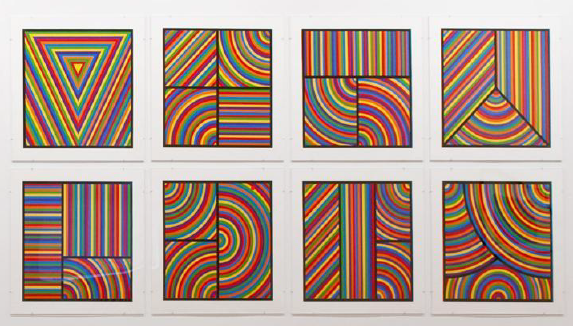

Projects
Rectangles with variable dimensions
In this exercise, my goal was to ensure that the dimensions and shades of the rectangles would change dynamically depending on the position of the mouse. Click to see my project

Random circles
In this exercise, my goal was to create a program that draws circles with random sizes, colors and slides, in random positions on the screen. Click to see my project

Random lines
In this exercise, my goal was to create a program that draws lines connecting random points on the top and bottom sides of the canvas, with random colors and transparency. Click to see my project

A work of art inspired by Sol Lewitt
While observing Sol Lewitt's artworks I noticed the following pattern. In most of his paintings he uses basic geometric shapes which he incorporates into an irregular canvas. So I decided to try to do something similar, but in my work there are some variables that define the position of the shapes, their size, and the color of their outline. My source of inspiration was the following paintings. Click to see my project
